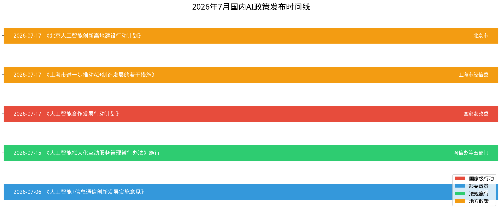
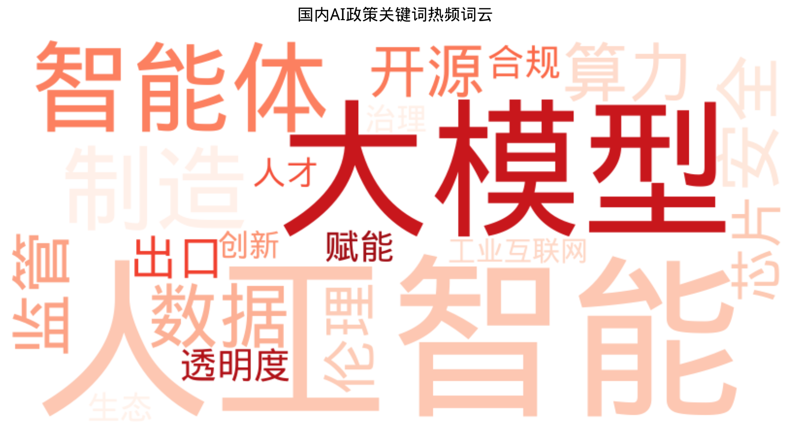
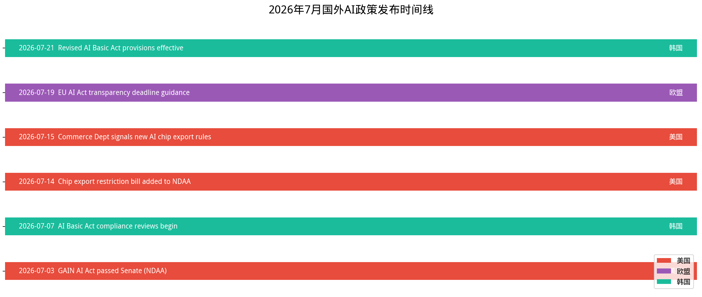
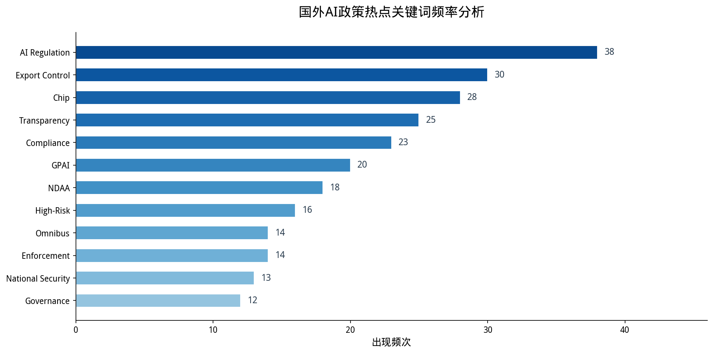
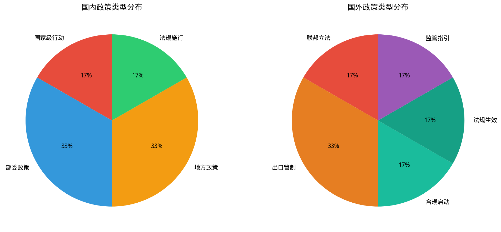
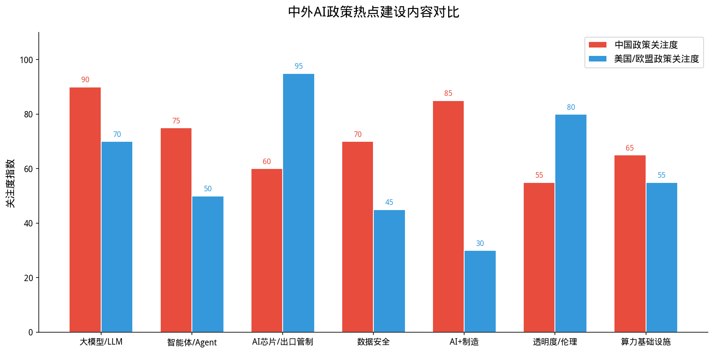
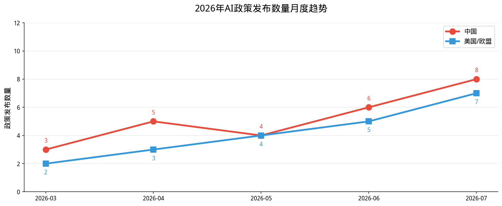

全球人工智能政策动态监测与分析
2026年7月，国内AI政策密集发布，以7月17日世界人工智能大会(WAIC)为关键节点，国家发改委发布《人工智能合作发展行动计划》，上海、北京等地同步推出产业配套政策。本月政策呈现"国家战略引领+地方精准落地"的双重特征，重点关注AI+制造、大模型、智能体、数据安全等领域。

工信部发布，推动AI与信息通信业深度融合
五部门联合发布，全球首部AI拟人化互动服务专项法规
国家发改委在WAIC大会发布，提出八大全球合作行动
上海发布13条新政，最高单项目补贴4000万元
北京提出两年内AI核心产业规模破万亿
| 发布日期 | 政策名称 | 发布单位 | 政策类型 | 核心要求 | 数据来源 |
|---|---|---|---|---|---|
| 2026-07-06 | 《人工智能+信息通信创新发展实施意见(2026—2028年)》 | 工业和信息化部 | 部委政策 | 推动AI与信息通信业深度融合，明确2026-2028年发展路径，加强网络基础设施智能化升级 | 查看原文 ↗ |
| 2026-07-15 | 《人工智能拟人化互动服务管理暂行办法》 | 网信办、发改委、工信部、公安部、市场监管总局 | 法规施行 | 全球首部AI拟人化互动服务专项法规，禁止AI情感操纵，要求明确标识AI身份，保护用户权益 | 查看原文 ↗ |
| 2026-07-17 | 《人工智能合作发展行动计划》 | 国家发展和改革委员会 | 国家级行动 | 八大行动：数据共享、智能算力、开源生态、深度赋能、数智人才、规则对接、协同治理、AI向善 | 查看原文 ↗ |
| 2026-07-17 | 《上海市进一步推动AI+制造发展的若干措施》 | 上海市经济和信息化委员会 | 地方政策 | 13条措施，工业垂类大模型最高支持2000万元，工业AI安全方案最高1000万元，算力补贴最高4000万元 | 查看原文 ↗ |
| 2026-07-17 | 《北京人工智能创新高地建设行动计划》 | 北京市经济和信息化局 | 地方政策 | 两年内AI核心产业规模破万亿，完善算力供给、数据建设、中试服务体系 | 查看原文 ↗ |
| 2026-07月 | "铸盾模都"2026年人工智能安全赋能专项行动 | 上海市通信管理局 | 部委行动 | 针对电信和互联网行业AI服务企业，加强网络和数据安全管理，落实AI安全主体责任 | 查看原文 ↗ |

| 排名 | 关键词 | 频次 | 趋势 |
|---|---|---|---|
| 1 | 人工智能 | 45 | ↑ 上升 |
| 2 | 大模型 | 32 | ↑ 上升 |
| 3 | 智能体 | 28 | ↑ 新热词 |
| 4 | 制造 | 25 | ↑ 上升 |
| 5 | 数据 | 24 | → 持平 |
| 6 | 安全 | 22 | ↑ 上升 |
| 7 | 算力 | 20 | → 持平 |
| 8 | 监管 | 18 | ↑ 上升 |
| 9 | 开源 | 16 | ↑ 上升 |
| 10 | 伦理 | 15 | → 持平 |
与2026年上半年政策相比，7月国内AI政策呈现以下显著变化：
| 维度 | 前期政策特征 | 本月政策变化 |
|---|---|---|
| 政策层级 | 以部委规章和地方试点为主 | 上升至国家级行动计划，发改委发布《人工智能合作发展行动计划》 |
| 关注焦点 | 侧重技术研发和基础设施 | 转向场景落地与产业赋能，"AI+制造"成为核心抓手 |
| 监管重点 | 通用型AI服务管理 | 细化至拟人化互动等具体场景，全球首部专项法规施行 |
| 扶持方式 | 普惠性补贴和税收优惠 | 精准化引导，上海单项目最高补贴4000万元，聚焦工业大模型和智能体 |
| 国际合作 | 以内循环为主 | 明确提出八大全球合作行动，共建开源生态和数智人才联合培养 |
2026年7月，全球AI监管进入关键窗口期。美国参议院通过GAIN AI Act，限制对华AI芯片出口；欧盟AI Act透明度规则将于8月2日全面生效；韩国AI基本法合规审查正式启动。各国政策呈现"安全优先、出口管制、合规收紧"的显著趋势。

美国参议院67-31票通过，要求芯片制造商优先满足国内订单
国家AI委员会确认高影响AI系统正式合规审查开始
参议员Banks宣布限制对华AI芯片出口法案将加入参议院版FY2027 NDAA
商务部工业安全局副局长Kessler表示正在制定新的AI和半导体出口监管方法
Article 50透明度规则将于8月2日生效，违规罚款最高3500万欧元或全球营收7%
公共部门AI使用规定正式生效，支持数据基础设施和专业人才培养
| 发布日期 | 政策/事件名称 | 发布国家/地区 | 发布单位 | 政策类型 | 核心要求 | 数据来源 |
|---|---|---|---|---|---|---|
| 2026-07-03 | GAIN AI Act (Guaranteeing Access and Innovation for National AI Act) | 美国 | US Senate | 联邦立法 | 要求AI和高性能芯片制造商优先满足美国国内订单后再出口；赋予国会否决最敏感芯片出口许可的权力 | 查看原文 ↗ |
| 2026-07-07 | AI Basic Act Formal Compliance Reviews Begin | 韩国 | National AI Committee | 合规启动 | 高影响AI系统（就业、教育、金融、医疗）正式开始合规审查，要求透明度披露和影响评估 | 查看原文 ↗ |
| 2026-07-14 | AI Chip Export Restriction Bill (AI Overwatch Act) | 美国 | US Senate (Sen. Banks) | 出口管制 | 限制对华AI芯片销售法案将纳入FY2027 NDAA；同时Match Act和Chip Security Act也纳入 | 查看原文 ↗ |
| 2026-07-15 | Commerce Dept New AI & Semiconductor Export Rules | 美国 | US Commerce Department | 出口管制 | 商务部工业安全局表示正在制定新的AI和半导体出口监管方法，未来将有具体监管行动 | 查看原文 ↗ |
| 2026-07-19 | EU AI Act Transparency Deadline Guidance | 欧盟 | European Commission | 监管指引 | Article 50透明度规则8月2日生效：AI系统须明确告知用户、深度伪造内容须标注、情感识别须披露 | 查看原文 ↗ |
| 2026-07-21 | Revised AI Basic Act Provisions Effective | 韩国 | South Korea Government | 法规生效 | 公共部门AI使用规定生效，支持AI研发和数据基础设施建设，重组国家AI战略委员会 | 查看原文 ↗ |

| 排名 | 关键词 | 频次 | 趋势 |
|---|---|---|---|
| 1 | AI Regulation | 38 | ↑ 上升 |
| 2 | Export Control | 30 | ↑ 新热词 |
| 3 | Chip | 28 | ↑ 上升 |
| 4 | Transparency | 25 | ↑ 上升 |
| 5 | Compliance | 23 | ↑ 上升 |
| 6 | GPAI | 20 | → 持平 |
| 7 | NDAA | 18 | ↑ 上升 |
| 8 | High-Risk | 16 | → 持平 |
| 9 | Omnibus | 14 | ↑ 新热词 |
| 10 | Enforcement | 14 | ↑ 上升 |
| 维度 | 前期特征 | 本月变化 |
|---|---|---|
| 美国立法 | CREATE AI Act等侧重研究资源 | GAIN AI Act转向出口管制与国家安全，67-31票两党共识通过 |
| 出口管制 | 个案审批模式 | 系统性立法限制，要求"美国优先"供应，国会获得否决权 |
| 欧盟执法 | GPAI义务已生效但执法权未启动 | 8月2日执法权力正式激活，罚款最高3500万欧元或全球营收7% |
| 韩国监管 | AI基本法1月生效但处于宽限期 | 7月正式结束宽限期，启动高影响AI系统合规审查 |
| 全球趋势 | 各国分散立法 | 趋向同步收紧，中美欧韩7-8月形成"监管窗口期"共振 |



数据显示，2026年7月中国AI政策发布数量达到8项，美国/欧盟相关政策达到7项，均为年内峰值，反映出全球AI监管正在加速收紧。
2026世界人工智能大会(WAIC)于7月17日至20日在上海举行，今日为大会闭幕日。大会期间（7月17日）集中发布了多项国家级和地方级AI政策，包括发改委《人工智能合作发展行动计划》和上海《AI+制造13条措施》等重磅文件。今日暂无新的独立政策发布，但WAIC大会成果将持续影响后续政策制定。
三地四馆、10万㎡展区、1100+企业参与，多项政策在大会期间发布